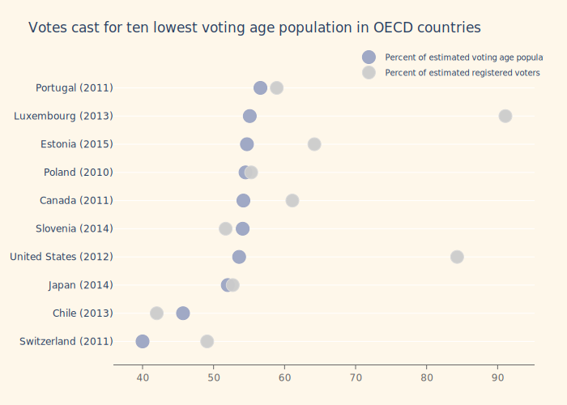
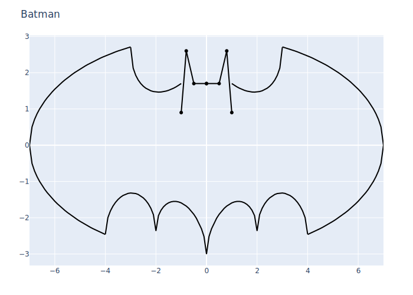
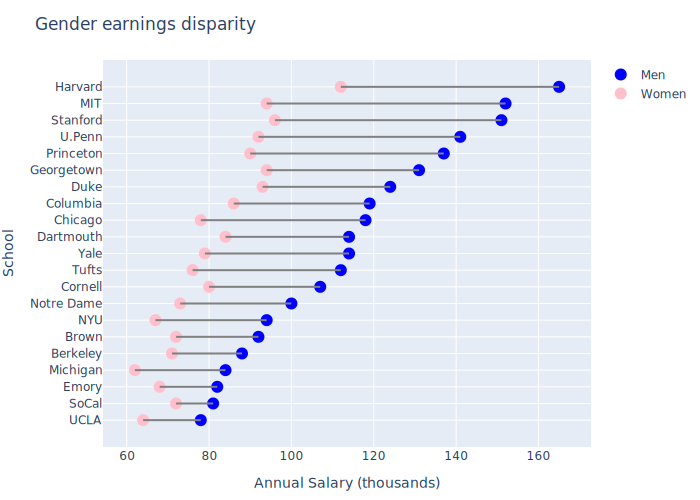
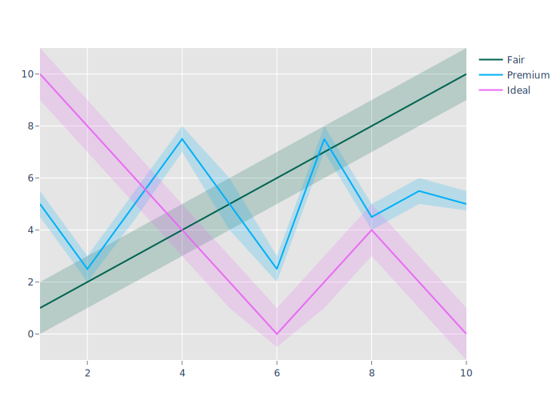
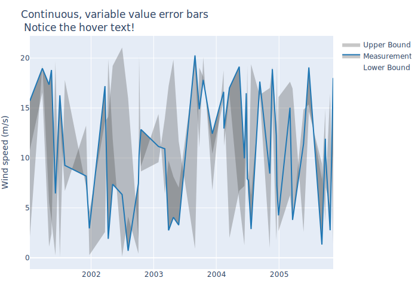

using PlotlyJS, DataFrames, CSV, Dates, HTTP
function linescatter1()
trace1 = scatter(;x=1:4, y=[10, 15, 13, 17], mode="markers")
trace2 = scatter(;x=2:5, y=[16, 5, 11, 9], mode="lines")
trace3 = scatter(;x=1:4, y=[12, 9, 15, 12], mode="lines+markers")
plot([trace1, trace2, trace3])
end
linescatter1()
function linescatter2()
trace1 = scatter(;x=1:5, y=[1, 6, 3, 6, 1],
mode="markers", name="Team A",
text=["A-1", "A-2", "A-3", "A-4", "A-5"],
marker_size=12)
trace2 = scatter(;x=1:5 + 0.5, y=[4, 1, 7, 1, 4],
mode="markers", name="Team B",
text=["B-a", "B-b", "B-c", "B-d", "B-e"])
# setting marker.size this way is _equivalent_ to what we did for trace1
trace2["marker"] = Dict(:size => 12)
data = [trace1, trace2]
layout = Layout(;title="Data Labels Hover", xaxis_range=[0.75, 5.25],
yaxis_range=[0, 8])
plot(data, layout)
end
linescatter2()
function linescatter3()
trace1 = scatter(;x=1:5, y=[1, 6, 3, 6, 1],
mode="markers+text", name="Team A",
textposition="top center",
text=["A-1", "A-2", "A-3", "A-4", "A-5"],
marker_size=12, textfont_family="Raleway, sans-serif")
trace2 = scatter(;x=1:5 + 0.5, y=[4, 1, 7, 1, 4],
mode="markers+text", name="Team B",
textposition="bottom center",
text=["B-a", "B-b", "B-c", "B-d", "B-e"],
marker_size=12, textfont_family="Times New Roman")
data = [trace1, trace2]
layout = Layout(;title="Data Labels on the Plot", xaxis_range=[0.75, 5.25],
yaxis_range=[0, 8], legend_y=0.5, legend_yref="paper",
legend=attr(family="Arial, sans-serif", size=20,
color="grey"))
plot(data, layout)
end
linescatter3()
function linescatter4()
trace1 = scatter(;y=fill(5, 40), mode="markers", marker_size=40,
marker_color=0:39)
layout = Layout(title="Scatter Plot with a Color Dimension")
plot(trace1, layout)
end
linescatter4()
function linescatter5()
country = ["Switzerland (2011)", "Chile (2013)", "Japan (2014)",
"United States (2012)", "Slovenia (2014)", "Canada (2011)",
"Poland (2010)", "Estonia (2015)", "Luxembourg (2013)",
"Portugal (2011)"]
votingPop = [40, 45.7, 52, 53.6, 54.1, 54.2, 54.5, 54.7, 55.1, 56.6]
regVoters = [49.1, 42, 52.7, 84.3, 51.7, 61.1, 55.3, 64.2, 91.1, 58.9]
# notice use of `attr` function to make nested attributes
trace1 = scatter(;x=votingPop, y=country, mode="markers",
name="Percent of estimated voting age population",
marker=attr(color="rgba(156, 165, 196, 0.95)",
line_color="rgba(156, 165, 196, 1.0)",
line_width=1, size=16, symbol="circle"))
trace2 = scatter(;x=regVoters, y=country, mode="markers",
name="Percent of estimated registered voters")
# also could have set the marker props above by using a dict
trace2["marker"] = Dict(:color => "rgba(204, 204, 204, 0.95)",
:line => Dict(:color => "rgba(217, 217, 217, 1.0)",
:width => 1),
:symbol => "circle",
:size => 16)
data = [trace1, trace2]
layout = Layout(Dict{Symbol,Any}(:paper_bgcolor => "rgb(254, 247, 234)",
:plot_bgcolor => "rgb(254, 247, 234)");
title="Votes cast for ten lowest voting age population in OECD countries",
width=600, height=600, hovermode="closest",
margin=Dict(:l => 140, :r => 40, :b => 50, :t => 80),
xaxis=attr(showgrid=false, showline=true,
linecolor="rgb(102, 102, 102)",
titlefont_color="rgb(204, 204, 204)",
tickfont_color="rgb(102, 102, 102)",
autotick=false, dtick=10, ticks="outside",
tickcolor="rgb(102, 102, 102)"),
legend=attr(font_size=10, yanchor="middle",
xanchor="right"),
)
plot(data, layout)
end
linescatter5()
function linescatter6()
trace1 = scatter(;x=[52698, 43117], y=[53, 31],
mode="markers",
name="North America",
text=["United States", "Canada"],
marker=attr(color="rgb(164, 194, 244)", size=12,
line=attr(color="white", width=0.5))
)
trace2 = scatter(;x=[39317, 37236, 35650, 30066, 29570, 27159, 23557, 21046, 18007],
y=[33, 20, 13, 19, 27, 19, 49, 44, 38],
mode="markers", name="Europe",
marker_size=12, marker_color="rgb(255, 217, 102)",
text=["Germany", "Britain", "France", "Spain", "Italy",
"Czech Rep.", "Greece", "Poland", "Portugal"])
trace3 = scatter(;x=[42952, 37037, 33106, 17478, 9813, 5253, 4692, 3899],
y=[23, 42, 54, 89, 14, 99, 93, 70],
mode="markers",
name="Asia/Pacific",
marker_size=12, marker_color="rgb(234, 153, 153)",
text=["Australia", "Japan", "South Korea", "Malaysia",
"China", "Indonesia", "Philippines", "India"])
trace4 = scatter(;x=[19097, 18601, 15595, 13546, 12026, 7434, 5419],
y=[43, 47, 56, 80, 86, 93, 80],
mode="markers", name="Latin America",
marker_size=12, marker_color="rgb(142, 124, 195)",
text=["Chile", "Argentina", "Mexico", "Venezuela",
"Venezuela", "El Salvador", "Bolivia"])
data = [trace1, trace2, trace3, trace4]
layout = Layout(;title="Quarter 1 Growth",
xaxis=attr(title="GDP per Capital", showgrid=false, zeroline=false),
yaxis=attr(title="Percent", zeroline=false))
plot(data, layout)
end
linescatter6()

function batman()
# reference: https://github.com/alanedelman/18.337_2015/blob/master/Lecture01_0909/The%20Bat%20Curve.ipynb
σ(x) = @. √(1 - x.^2)
el(x) = @. 3 * σ(x / 7)
s(x) = @. 4.2 - 0.5 * x - 2.0 * σ(0.5 * x - 0.5)
b(x) = @. σ(abs(2 - x) - 1) - x.^2 / 11 + 0.5x - 3
c(x) = [1.7, 1.7, 2.6, 0.9]
p(i, f; kwargs...) = scatter(;x=[-i; 0.0; i], y=[f(i); NaN; f(i)],
marker_color="black", showlegend=false,
kwargs...)
traces = vcat(p(3:0.1:7, el; name="wings 1"),
p(4:0.1:7, t -> -el(t); name="wings 2"),
p(1:0.1:3, s; name="Shoulders"),
p(0:0.1:4, b; name="Bottom"),
p([0, 0.5, 0.8, 1], c; name="head"))
plot(traces, Layout(title="Batman"))
end
batman()
function dumbell()
# reference: https://plot.ly/r/dumbbell-plots/
# read Data into dataframe
url = "https://raw.githubusercontent.com/plotly/datasets/master/school_earnings.csv"
df = DataFrame(CSV.File(HTTP.get(url).body))
# sort dataframe by male earnings
df = sort(df, :Men, rev=false)
men = scatter(;y=df.School, x=df.Men, mode="markers", name="Men",
marker=attr(color="blue", size=12))
women = scatter(;y=df.School, x=df.Women, mode="markers", name="Women",
marker=attr(color="pink", size=12))
lines = map(eachrow(df)) do r
scatter(y=fill(r.School, 2), x=[r.Women, r.Men], mode="lines",
name=r.School, showlegend=false, line_color="gray")
end
data = Base.typed_vcat(GenericTrace, men, women, lines)
layout = Layout(width=650, height=650, margin_l=100, yaxis_title="School",
xaxis_title="Annual Salary (thousands)",
title="Gender earnings disparity")
plot(data, layout)
end
dumbell()
function errorbars1()
trace1 = scatter(;x=vcat(1:10, 10:-1:1),
y=vcat(2:11, 9:-1:0),
fill="tozerox",
fillcolor="rgba(0, 100, 80, 0.2)",
line_color="transparent",
name="Fair",
showlegend=false)
trace2 = scatter(;x=vcat(1:10, 10:-1:1),
y=[5.5, 3.0, 5.5, 8.0, 6.0, 3.0, 8.0, 5.0, 6.0, 5.5, 4.75,
5.0, 4.0, 7.0, 2.0, 4.0, 7.0, 4.4, 2.0, 4.5],
fill="tozerox",
fillcolor="rgba(0, 176, 246, 0.2)",
line_color="transparent",
name="Premium",
showlegend=false)
trace3 = scatter(;x=vcat(1:10, 10:-1:1),
y=[11.0, 9.0, 7.0, 5.0, 3.0, 1.0, 3.0, 5.0, 3.0, 1.0,
-1.0, 1.0, 3.0, 1.0, -0.5, 1.0, 3.0, 5.0, 7.0, 9.],
fill="tozerox",
fillcolor="rgba(231, 107, 243, 0.2)",
line_color="transparent",
name="Fair",
showlegend=false)
trace4 = scatter(;x=1:10, y=1:10,
line_color="rgb(00, 100, 80)",
mode="lines",
name="Fair")
trace5 = scatter(;x=1:10,
y=[5.0, 2.5, 5.0, 7.5, 5.0, 2.5, 7.5, 4.5, 5.5, 5.],
line_color="rgb(0, 176, 246)",
mode="lines",
name="Premium")
trace6 = scatter(;x=1:10, y=vcat(10:-2:0, [2, 4,2, 0]),
line_color="rgb(231, 107, 243)",
mode="lines",
name="Ideal")
data = [trace1, trace2, trace3, trace4, trace5, trace6]
layout = Layout(;paper_bgcolor="rgb(255, 255, 255)",
plot_bgcolor="rgb(229, 229, 229)",
xaxis=attr(gridcolor="rgb(255, 255, 255)",
range=[1, 10],
showgrid=true,
showline=false,
showticklabels=true,
tickcolor="rgb(127, 127, 127)",
ticks="outside",
zeroline=false),
yaxis=attr(gridcolor="rgb(255, 255, 255)",
showgrid=true,
showline=false,
showticklabels=true,
tickcolor="rgb(127, 127, 127)",
ticks="outside",
zeroline=false))
plot(data, layout)
end
errorbars1()
function errorbars2()
function random_dates(d1::DateTime, d2::DateTime, n::Int)
map(Date, sort!(rand(d1:Dates.Hour(12):d2, n)))
end
function _random_number(num, mul)
value = []
j = 0
rand = 0
while j <= num + 1
rand = rand() * mul
append!(value, [rand])
j += 1
end
return value
end
dates = random_dates(DateTime(2001, 1, 1), DateTime(2005, 12, 31), 50)
trace1 = scatter(;x=dates,
y=20.0 .* rand(50),
line_width=0,
marker_color="444",
mode="lines",
name="Lower Bound")
trace2 = scatter(;x=dates,
y=21.0 .* rand(50),
fill="tonexty",
fillcolor="rgba(68, 68, 68, 0.3)",
line_color="rgb(31, 119, 180)",
mode="lines",
name="Measurement")
trace3 = scatter(;x=dates,
y=22.0 .* rand(50),
fill="tonexty",
fillcolor="rgba(68, 68, 68, 0.3)",
line_width=0,
marker_color="444",
mode="lines",
name="Upper Bound")
data = [trace1, trace2, trace3]
t = "Continuous, variable value error bars<br> Notice the hover text!"
layout = Layout(;title=t, yaxis_title="Wind speed (m/s)")
plot(data, layout)
end
errorbars2()
